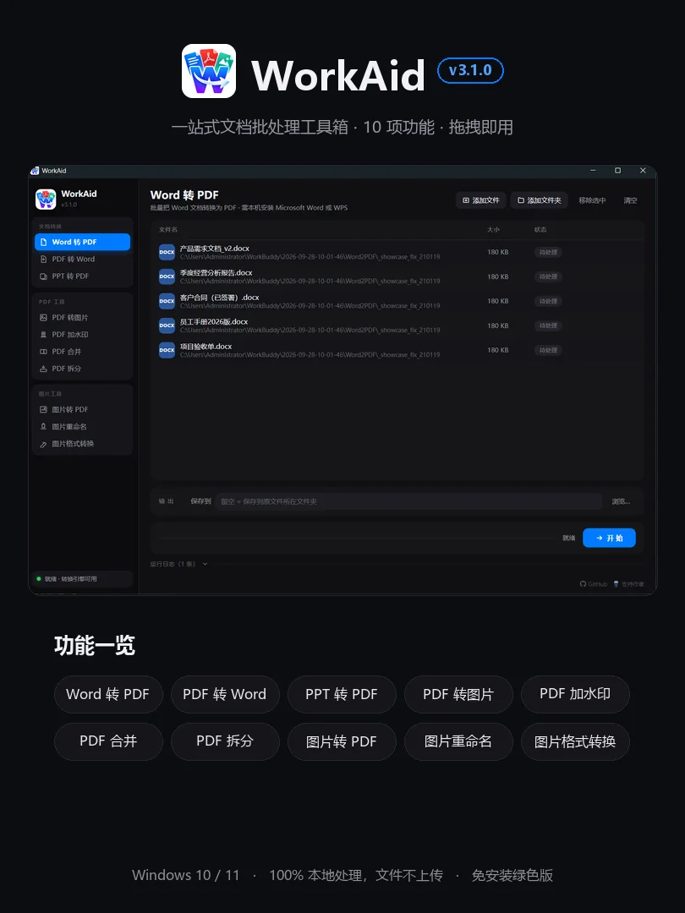

WorkAid · v3.1.0
一站式文档
批处理工具箱
10 项常用功能，批量处理、拖拽即用。文件全程本机处理、不联网。

- Word / PPT 转 PDF
- PDF 转 Word，免装 Office
- PDF 加水印 合并 拆分
- PDF 转图片、图片转 PDF
- 图片批量重命名
- 图片格式转换 · 7 种互转
–Star
–次下载
安装方式：解压到任意位置，双击 WorkAid.exe 即可使用（WorkAid.exe 与 workaid-cli 文件夹需放在同一层）。首次运行如提示“未知发布者”，点「更多信息 → 仍要运行」。
Windows 10 / 11 · 64 位 · 免安装绿色版 · MIT 开源 · 永久免费